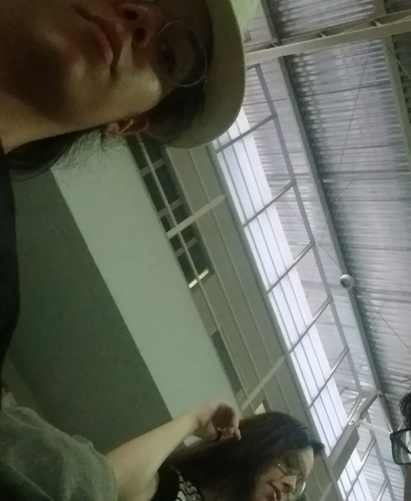

Como eu acabei aqui fazendo tudo isso?
A respotas é bem curta e direta, eu me apeixonei!
Mas vou explicar melhor como eu cheguei nesse ponto kkkkkk.
E a verdade é que não precisou de muito, é você, o difícil foi tentar não me apaixonar por ti quando eu te conheci, não o contrário. Eu não acredito em amor à primeira vista, não se pode amar alguém que não se conhece, então não foi amor à primeira vista, no entanto alguma coisa aconteceu ali, porque eu lembro bem de quando eu pisei meus pés na UFC no primeiro dia de aula e te notei ali no meio das pessoas. Alguma parte de mim sentiu algo em ti, não sei dizer oque, mas aconteceu, por que eu já lembro de mim querendo ficar perto de ti desde os primeiros dias.
Logo na primeira semana a gente já começou a conversar todos os dias, se me perguntasse naquela época se eu achava que a gente seguiria assim presente todo dia, desde então, na vida uma da outra, eu diria que era bem improvável. Mas aqui estamos, contrariando tudo que eu achei improvável e impossível.
Eu te disse que eu percebi que algum sentimento estava crescendo dentro de mim por volta da segunda semana de aula, e de fato eu percebi com aquele olhar, um simples olhar de como quem não quer nada, mas que pra mim disparou o meu coração e gerou a faísca que acendeu o fogo que queima até hoje no meu peito.
Depois disso foi só ladeira a baixo, não de uma forma ruim, eu gosto da expressão em inglês “falling for you” por que pra mim essa é exatamente a sensação que eu tive quando comecei a me apaixonar por ti. Um olhar e de repente eu estava em queda livre, mas não como se meu chão tivesse se aberto e eu tivesse caindo em um buraco escuro, mais parecia como o exato oposto, era como se eu tivesse pulado de paraquedas de um avião a 12mil pés de altura
Foi assustador no começo, isso nunca tinha acontecido comigo antes então eu tive medo, tentei fingir que não estava acontecendo, mas era mais forte que eu pra ignorar, tentei me agarrar e algo pra parar ou ao menos diminuir a velocidade, mas eu estava em pleno ar, era uma via de mão única. Foi então que eu segurei o medo por um segundo e prestei atenção nas outras coisas que estavam acontecendo, abri os olhos e vi a vista incrível que eu tinha lá de cima, ainda eram as mesmas coisas de sempre, mas tudo de um ângulo diferente; senti o vento contra meu corpo e senti meu coração que batia como louco com toda aquela adrenalina. E então deixei o medo de lado e apenas senti e quanto mais eu caia mais intensas as sensações ficavam.
O medo ainda voltou algumas vezes depois, mas no fim, nada me fazia sentir daquele jeito, então valia a pena, até que um dia então eu percebi que não fazia sentido ter medo do que aconteceria quando eu chegasse ao chão, até por que eu poderia abrir meu paraquedas e ter um pouso suave, ou quem sabe eu poderia continuar caindo por anos e anos, mas ainda que meu paraquedas falhe e eu atinja o chão com toda velocidade eu decidi não mais apenas cair deixando a gravidade me levar, ou figir disso, eu decidi mergulhar de cabeça. E eu continuo mergulhando em ti, em nós, desde então e de nada me arrependo porque nada me deixa tão feliz quanto perceber que ainda hoje cada dia que passa eu me apaixono mais um pouquinho por ti.
Essa aba é pra quando estiver triste
O conteúdo dessa aba na verdade foi de onde eu tirei a ideia de fazer tudo isso. Eu odeio te ver triste, odeio não poder fazer nada pra ajudar, então eu tinha pensando em juntar umas coisas que talvez pudessem te ajudar a melhorar quando tiver assim.
Irônicamente a aba que deu origem a essa ideia é a que tem menos conteúdo. Acabei levando mais tempo do que eu pensei pra terminar a estrutura das coisas.
Obs: Com o tempo pretendo ir adicionando mais coisas aqui já que não deu tempo de procurar mais :(
Por enquanto deixo aqui umas músiquinhas que gosto muito da letra delas.
Galeria com nossas fotinhas
Fotinha da época do curso de arduino. Lembro como eu fazia de tudo pra sentar do teu lado, e sempre ficava triste quando não conseguia, até hoje na verdade kkkkkk.
Tirando foto minha na sala, eu provavelmente tava jogando.
Hoje eu já me arrependo de não ter tirado mais fotinhas contigo, a gente tem tão poucas..
Essa eu achei perdida, juro que não lembro quando foi isso kkkk.
Adoro essa :3
Eu de intrusa na foto.
On wednesdays we wear pink!
Bday de alguém do sapabonde, mas não lembro quem.
Queria lembrar como foi esse rolê.
Carnavel que a gente foi juntas, eu tava pôde, mas tá valendo.
Mesmo bebada eu lembro bem de quando cê tirou essa foto, a gente tava no quarto fazendo alguma coisa aí cê me puxou do nada, eu tava vendo tudo embaçado kkkkkkkk
Outras fotinha eu bebada, lembro q apoiei em ti porque tava tudo rodando.
Foto do mesmo dia em que a gente ficou pela primeira vez, esse dia foi perfeito, na verdade o final de semana todo.
Essa não lembro direito em qual final de semana foi, mas saudades de ficar deitada contigo fazendo varios nadas.

Dia que fomos pro De Boa na Margem, amei esse dia também!
O dia que deixamos de ir pra vinholada pra tomar cerveja em casa, melhor escolha impossível!
Aff como eu amo ficar agarradinha em ti S2.
Poderia passar horas e horas assim juntinha de ti.
Ainda me acho horrível nessa foto, mas por ser nós juntinhas eu amo ela do fundo do coração.
Dia que fui pra UFC só pra ti ver, mais um dia normal na minha vida.
E o dia que ue desafiei minha mãe e quebrei quarentena só pra ir matar aa saudade que tava de ti, e pra entregar o presentinho de 6 meses.
Categoria especial
E por último um especial, uma categoria que não são fotos nossas, mas era algo que cê fez algumas vezes no comecinho logo assim que a gente se conheceu. Apresentando, categoria selfies aleatórias que cê tirava no meu celelular e eu achava depois quando entrava na minha galeria procurando algo.
Não sei por que parou, mas queria que não tivesse parado, era muito bom achar essas fotinhas de surpresa no meu celular.
Todas as coisinhas que amo em ti
Sim! É isso mesmo essa aba é inteiramente apenas pra exaltar o puta mulherão incrivel que você é!
Primeiramente queria deixar claro que não irei listar em ordem do que eu mais gosto pq não tem como eu escolher apenas uma coisas que eu mais amo em ti.
Eu não sei nem por onde começar aqui, cê é a pessoa mais incrivel que já conheci, não me importo se você não acredita em mim, ou pensa o contrário, pra mim você é sim e ponto. E não tem essa de que eu só acho isso porque tô apaixonada, eu continuo achando e é isso que importa. Mano tu é maravilhosa, eu não canso de te olhar, de te admirar, eu amo deixar meus olhos passearem em cada detalhe do teu rosto, do mais simples, como um traço, ao mais complexo, como teu olhar, ou até mesmo os mais gostosos, como as curvas dos teus lábios.
Eu poderia ficar horas apenas te olhando, decorando teu ser, pra quando meus olhos não te alcansarem eu te tenha aqui tão bem dentro na memória.
Vou começar do começo então, a primeira coisa que amei em ti foi quem tu é, cê é uma companhia agradavél, consegue conversar sobre qualquer coisa, mas não só falar, cê diverte quando o assunto encaixa, assim como assume um tom e postura mais séria quando necessário. Você é inteligente, sabe se comunicar bem dentro dos assuntos, tem personalidade forte, não passa despercebida.
Você também é muito boa amiga, cuida dos seus, protege e tenta ajudar, se importa até mais do que devia as vezes deixando isso lhe afetar, mas voçê faz, porque tem um bom coração e não consegue não se importar.
Você tem gosto pelas artes, toca, dança, aprecia. Infelizmente só tive oportunidade de te ver tocar e daçar, apenas umas vez cada, espero ter mais oportunidades aindas por que essas poucas que tive o prazer de assistir foram maravilhosas, ainda que ache que estava horrível, mas para mim foram, não por que era um show ou apresentações estôteantes, mas por que era você, fazendo algo que você gosta e isso pra mim não tem preço.
E como se nada disso fosse o suficiente, cê é a coisinha mais linda desse mundo, sério mesmo, tem horas que paro pra olhar umas fotinhas tuas que puta que pariu, como que pode ser tão linda assim. Eu real queria que você pudesse se ver através dos meus olhos, e pode achar que eu tô cega, a verdade é que as vezes eu agradeço por nem todo mundo te ver do jeito que eu vejo, não quero ter mais concorrência ainda.
Olha pra isso, cê é muito linda, gata de mais, tipo muito maravilhosa mesmooo!
E se tem algo que meu deus ilumina meu dia mais que o prórprio sol é o teu sorriso ou o teu riso, simplesmente não tem como, é autômatico, eu vê ouvir e o meu abrir junto. Tentei achar a aquela fotinha sua com seu amigo que você tá sorrindo tão linda, simplismente amo teu sorriso naquela foto, uma das minhas fotos favoritas sua, mas não achei :(
Vou deixar essa que também acho muito linda como prova. Olha que coisa mais maravilinda meu deus!
E é claro um dos detalhes em ti que eu mais amo e que me deixa louca, teu cheiro, puta que pariu mulher tu é cherosa de mais. Chega a ser embreagante, a forma como invade o local e logo depois meus pulmões, já que eu faço questão de respirar o mais fundo que eu conseguir, ma tentativa de manter teu cheiro no meu nariz por mais tempo. Quando o vento bate contra ti e todo o perfume vem na minha direção e como ser atingida em cheio por ti.
Aqui na foto podemos ver claramente aproveitando o teu perfume que ficou no travesseiro,
e sim eu
eu cherei ele até o perfume sair kkkkkk
E pra finalizar uma coisinha que amo em ti é jeito que cê fica comendo sal depois que acaba de comer no RU, por algum motivo cê fica muito sexy fazendo isso e eu simplismente amooo.
Flagrada no ato, nesse dia não era sal, mas tava comendo do mesmo jeito que faz com o sal.
Voçê é incrível meu amor, não devia duvidar disso nunca, muito menos deixar alguém lhe dizer o contrário, você é maravilhosa, interessante, engraçada, inteligente, linda, gostosa, tudo que se possa imaginar de bom, você é o combo inteiro e um mulherão desse porte não é pra qualquer um não.
Trilha sonora da nossa história
Aqui tem uma listinha das músicas que mais marcaram us, segundo a minha pespectiva.
Fato curioso é que nossas primeiras conversas foram trocando músicas. A gente ouvia batesnte juntas também quando estavamos na UFC, lembro como eu amava dividir o fone de ouvido contigo.
1. Beautiful
Ainda lembro do dia em que eu achei essa música no youtube. Eu tava no quarto da minha mãe quando ouvi ela, a gente já tinha trocado umas músicas então eu fiquei bem animada pra te mostar ela e saber se cê ia gostar. Acabou que não só a gente vicou nela como viciamos outras pessoas também.
2. Leftovers
Essa foi uma das primeiras que cê me mostrou, e assim como ainda hoje é quase que certeza eu amar uma música que cê me manda, porque automticamente ela vai me lembrar você, então não tem como eu não gostar.
3. Never be the same
Never be the same eu já conhecia, mas vicei ainda no primeiro mês q te conheci, foi logo após a fase de negação kkkkkkk, eu nunca tinha me apaixonado antes e achava que não ia ser agora que eu ia, mas eu não podia tá mais enganada.
"É você, amor
E eu sou uma idiota pelo jeito que você se move, amor
E eu poderia tentar fugir, mas seria inútil
A culpa é sua
Apenas uma dose de você e eu soube que eu nunca seria a mesma"
E definitivamente eu nunca mais serei a mesma depois ti, digo de uma forma boa mesmo, tenho aprendido muitas coisas contigo.
4. Solamento
Solamento é uma daquelas que bate que com força, me mostraram ela já um pouco depois, devia fazer uns meses já que a gente se conhecia e eu já tinha sentimentos por ti, então quando eu ouvi essa música foi como um soco no estômago. Eu tava na época em que eu não podia deixar que cê soubesse dos meus sentimentos por que eu tinha medo que isso fosse destrui nossa amizade, que era tudo que eu achei que fosse conseguir, e tudo bem. Essa música é foda.. mas ela hoje pra mim é mais uma prova de que eu consegui o impossível.
5. Unsteady
Unsteady é uma música que tá marcada na minha memória junto com uma imagem. Foi em um dos primeiros finais de semana que eu passei na tua casa, a lembraça tá nítida na minha mente ainda, eu saí do quarto pra ir pra cozinha e cê tava lá ouvindo ela. Acho que a minha mente faz esses "prints" quando é algo muito especial e definitiva eu tava muito feliz de tá ali contigo naquele dia, ainda que cê não fizesse a menor ideia do que se passava dentro de mim.
6. Poema de lágrimas
Poema de lágrimas foi outra que me marcou em um final de semana que passei contigo. Eu vinha escutando ela fazia uns dias já e o motivo de ter marcado foi por causa da letra.
"Você, que desde a primeira vez
Me fez esquecer de me perguntar
O que eu faria nessa chuva
Domingo de chuva"
Nesse final de semana, precisamente em um domingo a gente saiu no sereno atrás de alguma mercearia pra comprar leite condesado. Não tem como eu não ouvir essa música e não lembrar desse dia, assim como não tem um domindo de chuva que eu não lembre de ti.
7. Carrossel em câmera lenta
Essa é a música dos Selvagens que eu mais gosto e ela me lembra o show deles que a gente foi. Também tenho um print mental muito lindo de ti curtindo o show no meio das pessoas.
8. No matter
No matter é uma daquelas típicas músicas que cê escuta justamente pra lembrar de alguém, eu ouvia muito ela pensando em ti, pensando em como eu queria ter uma chance contigo.
9. Aquela pessoa
Essa eu ouvi no dia que seus pais me deram uma carona da UFC pra casa, ela tava tocando no carro, eu já tava nervosa por tá ali com eles aí me toca essa música e eu lá no banco de trás refletindo que tava completamente apaixona pela filha deles. Foi bem estranho em engraçado ao mesmo tempo, então não tem como eu não ouvir essa música e não lembrar disso.
10. Work
Nessa lista eu vou por apenas duas de Euphoria que são as mais marcantes pra mim em relação a us, mas aquele album quase todo também se encaixa perfeitamente aqui. Work é uma daquela músicas gostosinhas que eu ficava/fico ouvindo com cara de xonadinha imaginando nós duas juntas, é perfeita pra isso, amava sonhar acordada ouvindo ela.
11. Mount Everest
Acho que com essa música que a história começou a mudar, eu viciei mais ainda nela depois do dia que cê me mandou aquele video com ela, nossa juro que quase infartei, nunca tive tanta pena de fechar um video como eu tive com aquele.
12. Where the wild things
Essa música eu vinha ouvindo ela fazia um tempinho, aí teve o dia que a gente ficou na UFC, na volta do cinema anoite, a gente colocou umas músicas pra tocar enquanto conversava e ela tava tocando, acabou que ela me lembra muito aquela noite.
13. Caso indefinido
Eu amo essa música porque eu poderia cantar ela pra ti e todas as palavras, sem nenhuma exceção, seriam verdade
14. Medo bobo
Essa foi outra que eu ouvi muito antes de tudo começar e ainda escuto muito, especialmente por uma parte. Eu imaginava que eu diria isso se acontecesse.
"É, e na hora que eu te beijei
Foi melhor do que eu imaginei
Se eu soubesse tinha feito antes"
E quando eu finalmente te beijei eu constatei que sim, esse trecho é inteiramente verdade.
15. Dói sem tanto
Dói sem tanto cê me mandou depois de uma daquelas conversas sérias que a gente teve sobre us. Cê me mandou umas 3 músicas de anaevitória naquele dia porque tava ouvindo muito ultimamente e condizia com a situação, foi desde então que eu comecei a gostar delas.
"E é tão mais fácil quando
Tem você pra dormir junto
Tem pra acordar junto e viver junto
Tem você pra me contar dos seus dias seguros"
E sim esse trecho é a mais pura verdade.
16. Calendário
"Eu já te disse alguma vez
Tu tem pra mim o nome mais bonito
A boca canta ao te chamar
Teu canto chama o meu sorriso"
Não tem como ouvir essa música e não pensar em ti.
17. Dengo
"Deixa eu lhe convencer
Que tu é o ser mais bonito
Que eu tive a sorte de conhecer
E agora que tá aqui comigo
Não vai mais não"
A música fala por si só, é extamente isso!
18. Ferro
Ferro foi outra que eu ouvi em um final de semana que passei contigo. A gente tava na cama e a caxinha de som tava ligada, eu tava deitava agarrada em ti quando ela tocou. Então sempre que eu escuto ela me traz um semtimento de aconchego e felicidade.
19. Não olha assim pra mim
"Não canso de te procurar
Carinho faz arrepiar
Sozinha tu não vai ficar
Será que cabe eu aí"
Mais uma que a letra fala por si só!
20. Oque dizer de você
"O que dizer de você sempre estar aqui?
Mesmo quando fecho você vem abrir, meu sorriso
Sei que vai ser seu, nada disso é meu
Sei que vai ser seu sempre, sempre
Lantejoula, bloco, mão
Isso é deserto
Eu não quero a multidão
Eu só quero você"
Amo outroeu por que é uma letra mais verdade que a outra.
21. Partilhar
Essa foi outra que cê me mandou, apesar de que só fui viciar nela um pouco depois eu gosto muito dessa música por um motivo. Lembra que as vezes a gente fala de se encontrar de novo no futuro, em um lugar longe daqui, sem todo os medos que cercam a gente agora?
Essa música acalma meu coração quando eu pendo sobre isso, ela me dá esperanças que realmente se a gente chegar a se desencontrar ainda temos um chance de nos encontramos de novo no futuro.
"Se for preciso, eu pego um barco, eu remo
Por seis meses, como peixe pra te ver
Tão pra inventar um mar grande o bastante
Que me assuste e que eu desista de você"
E sim esse trecho é a mais pura verdade, tão pra inventar algo que me assuste e me faça desistir de ti.
22. Quando bate aquela saudade
Essa é outra que também me reconforta quanto ao futuro.
"Não tem medo, não
Eu sei, vai dar errado
A gente fica longe
E volta a namorar depois"
Só com umas músicas assim pra me acalmar quando eu fico ansiosa com medo de te perder. Thanks Rubel!
"Olha bem, mulher
Eu vou te ser sincero
Eu tô com uma vontade danada
De te entregar todos beijos que eu não te dei
E eu tô com uma saudade apertada
De ir dormir bem cansado
E de acordar do teu lado pra te dizer
Que eu te amo
Que eu te amo demais"
E esse trecho sou eu todinha aqui nessa querentena, tudo que eu queria era poder ir dormir e acordar ao teu lado.
23. Outra Vida
Outra vida cê me mandou não tá com muito tempo, disse lembrou de mim quando ouviu e como eu falei antes e já deve ter ficado meio claro é quase certeza eu viciar em uma música por que foi você que me mandou e com essa não foi diferente.
24. Oque falta em você sou eu
E essa é mais um que condiz com esse meu estado de saudade por culpa dessa quarentena.
"Falando em saudade
De novo eu acordei pensando em você
Já faz um mês que não te vejo
Trinta dias que eu acordo pensando em você"
Extras
Só pra explicar umas coisinhas sobre esse mini "site". Nem tudo saiu como eu planejei e eu também não pensei que fosse levar tanto tempo pra fazer algumas partes dele.
Tem varias coisas que eu queria ter feito diferente, ter feito melhor, ter feito mais bonitinha, mas ainda me faltam habilidade, descobri que sou uma péssima designer, então sorry se algumas coias tão bem meia boca kkkkk, mas juro que foi de coração.
Uma observação é que a aba Quando bater a bad era pra ser a última, mas por algum motivo dos infernos que quase me fez chorar de raiva se ela ficasse depois da aba de músicas, o player das 5 primeiras músicas não funcionavam mais.
Juro que na minha cabeça ia ficar bem melhor, mas enfim, espero que tenha gostado meu amô.